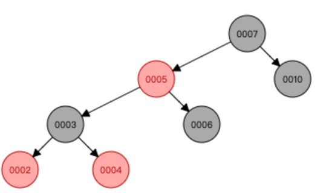
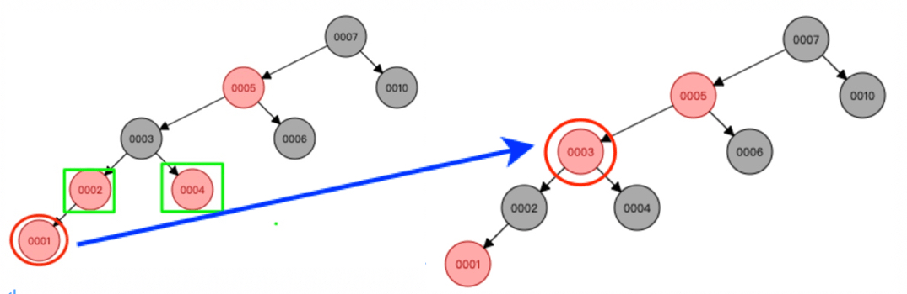
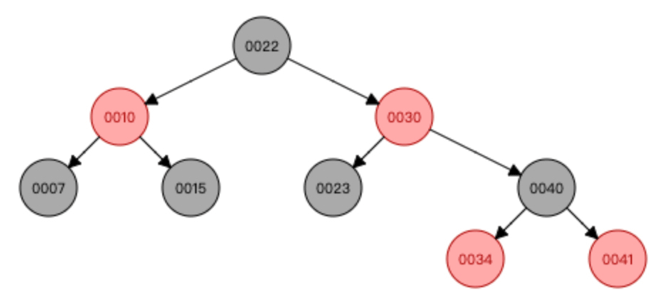
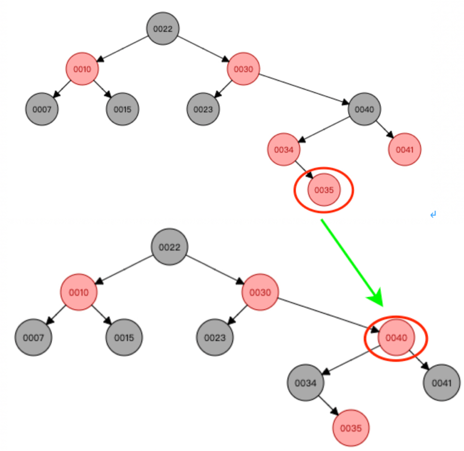
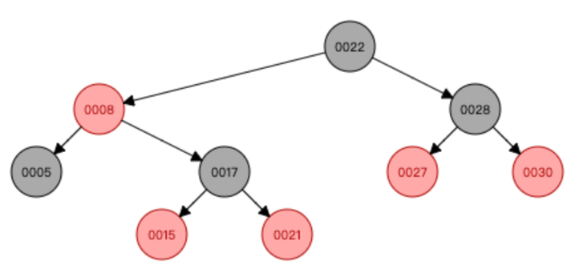
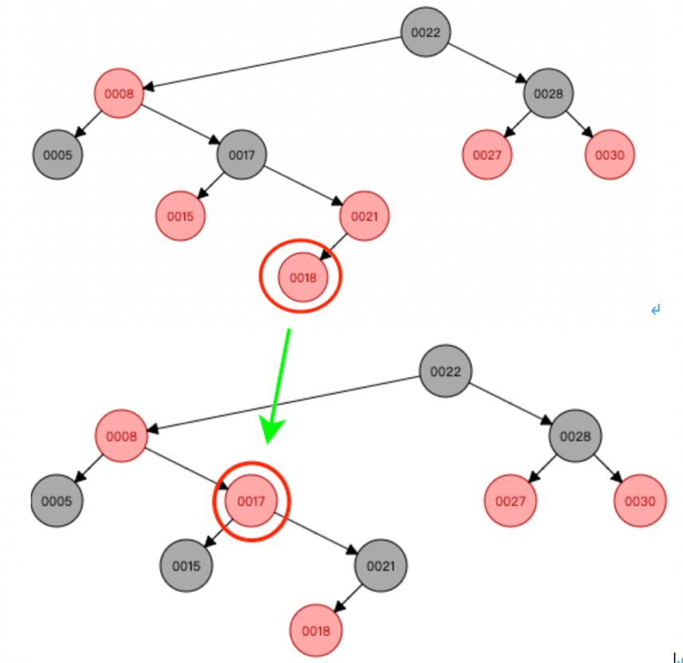

case 1 - 叔叔节点红色
关注节点 node，其叔叔节点是红色
此情况下必然存在祖父节点 gParent，且祖父节点一定是黑色。
操作步骤：
- 将关注节点 node 的父节点 parent，叔叔节点 uncle 都染黑；
- 将关注节点 node 的祖父节点 gParent 染红；
- 将关注节点 node 指向祖父节点 gParent；
- gParent 染红了，如与其父形成连续的红色节点，此时继续走 case1；
- 没有跳到 case 2 或 case 3。
模拟数据进入 case 3：
构建一个满足上述条件的红黑树，先后添加以下数据：（10, 7, 6, 5, 4, 3, 2），构建出的树如下：

新添加的节点 1，此时关注节点 1 且与其 parent 与 uncle 都是红色，我们按 case 1 变换调整如下：

此时关注节点 node 是 3 了，且其 uncle 是黑色，且关注节点是父的左孩子；
进入到 case 3。
模拟数据重复 case1：
构建一个树，先后插入以下数据：（10, 7, 15, 30, 22, 23, 40, 34, 41），构建出的树如下：

新添加的节点 35，此时关注节点 35 与且其 parent 与 uncle 都是红色，我们变换调整如下：

此时关注节点 node 是 40 了，且其 uncle 红色，case 1 要重新走一次。
模拟数据进入 case2：
构建一个树，先后插入以下数据：（22, 30, 21, 28, 27, 8, 5, 17, 15, 18），此时树结构如下：

新增加节点 18，此时关注节点 18 与且其 parent 与 uncle 都是红色，我们变换调整如下：

此时关注节点 node 是 17 了，且其 uncle 是黑色，且关注节点是父的右孩子；
那么进入到 case 2。